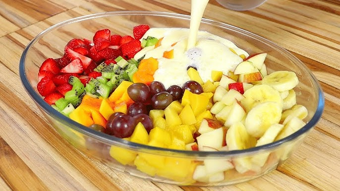

Data: 19/05/2026
Salada de Frutas (sobremesas)

Ingredientes:
- 1 maçã
- 1 banana
- 1 laranja
- 1 xícara de uvas
- Suco de 1 limão
Modo de preparo:
- Lave e corte as frutas em pedaços pequenos.
- Coloque as frutas em uma tigela grande.
- Adicione o suco de limão e misture bem.
- Refrigere por 30 minutos antes de servir.